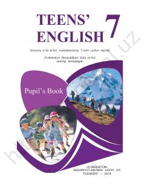

IT7-sinf o'quvchilari uchun mo'ljallangan ingliz tili darsligi.
Mazkur darslik umumiy o'rta ta'lim maktablarining 7-sinf o'quvchilari uchun ingliz tilini o'qitishga mo'ljallangan bo'lib, turli qiziqarli matnlar, muloqot mashqlari va grammatik qoidalarni o'z ichiga oladi. Kitob tinglab tushunish, gapirish va o'qish ko'nikmalarini rivojlantirishga qaratilgan topshiriqlar bilan boyitilgan.